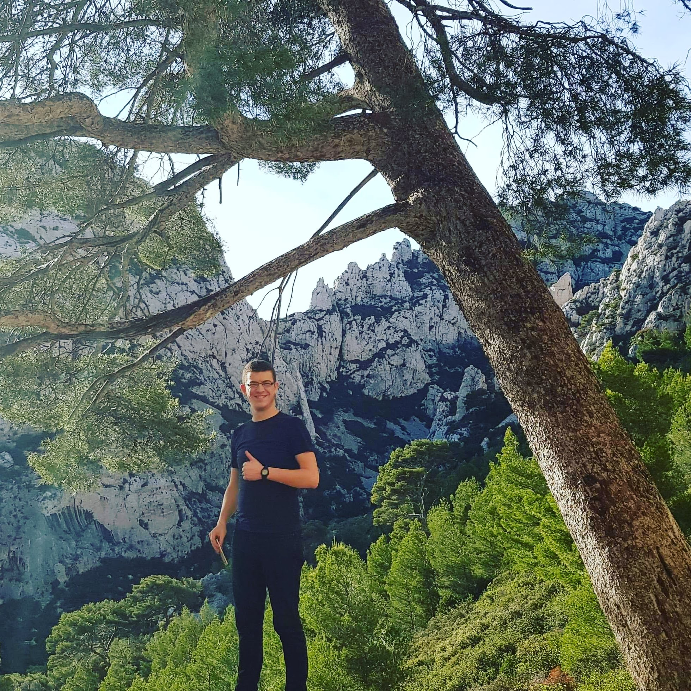

|
Zakaria OUARAS
Docteur en Mathématique. Equipe de recherche: Algèbre, Topologie et Géométrie. Laboratoire J. A. Dieudonné, UMR 7351 CNRS Université Côte d'Azur Parc Valrose 06108 Nice Cedex 2 France. Contacts:
Téléphone: +33(0)4 89 15 05 90 e-mail: ouaras@unice.fr e-mail personel: zakariaouaras95@gmail.com Bureau: 709, Bâtiment Dieudonné. |
 |
Domaine de Recherche:
-
Je travaille sur les espaces de module des fibrés vectoriels paraboliques sur
- Thèmes d'intérets:
- Espaces de modules des fibrés vectoriels.
- Espaces de modules des fibrés de Higgs.
- Connexion et fibration de Hitchin.
- Variétés Abéliennes.
- Fonctions Thêta.
une courbe projective complexe lisse et la construction algébro-géométrique de
la connexion de HITCHIN. Je m'intéresse aux fibrations de Hitchin et aux espaces
des fibrés de Higgs.
(Pré)-Publications:
- Parabolic Hitchin connection .
- Ma thèse de doctorat. Connexion de Hitchin parabolique .
Activités:
- Séminaires :
- Groupes de
Travail:
- La géométrie des variétés à fibré canonique trivial; deux
exposés sur les déformations
des variétés symplectiques holomorphes et théorème de Torelli locale.
Organisé par Andreas Höring, janvier 2021, au LJAD. - Les surfaces algébriques complexes; deux exposés sur les
surfaces réglées.
Organisé par Andreas Höring, 2020, au LJAD. - La construction de l'espace de module des fibrés vectoriels sur les courbes (avec Jérémy Toulisse).
- Géométrie et dynamique complexe: sur les singularités klt et lc, septembre 2019.
- Géométrie algébrique sur le livre de : Hartshorne,
Algebraic geometry.
Dirigé par Carlos Simpson, janvier 2019,au LJAD. - Autres activités:
- L'étude de la géometrie des surfaces K3.
- Groupe de lecture sur le livre "Teichmüller
theory and applications to geometry, topology, and
dynamics.", Hubbard, John H.
- Présentation d'un cours introductif à la géométrie complexe, été 2020, sur zoom.
- Co-organisation du Mathcamp5, juillet 2018 à Oran, Algérie.
Je suis membre du projet Mathwin, et j'ai participé aux activités suivantes:
Formations:
- Octobre 2019-Juillet 2023: Thèse de doctorat en mathèmatique, sous la direction de Christian PAULY.
- 2019: Master
en mathématiques pures et appliquées au
Laboratoire J.Dieudonné, Nice, France.
- Titre: Variétés Abéliennes et fonctions Thêta.
- Encadreur: Christian PAULY.
- Mon mémoire en pdf.
- Bourse d'excellence MPA 2018-2019.
- 2018: Master 1 en "Analyse Mathématique et Applications". Université USTO, Oran, Algérie.
- 2014-2017: Licence en Mathématiques. Université USTO, Oran, Algérie.
Enseignements:
- 2021-2022: TD Fondements Mathématique, Licence-1; UCA Nice, France.
- 2021-2022: Algèbre et Analyse, Licence-1; UCA Nice, France.
- 2020-2021: Tutorat Algèbre et Analyse, Licence-1; UCA Nice, France.
- 2020-2021: TD Fondements Mathématique, Licence-1; UCA Nice, France.
- 2020-2021: Cours de soutien Algèbre-Analyse, Licence-1; UCA Nice, France.
- 2019-2020: TD Fondements Mathématique, Licence-1; UCA Nice, France.
- 2019-2020: Cours de soutien Algèbre-Analyse, Licence-1; UCA Nice, France.
Quelques adresses mathématiques:
- L'équipe Algèbre, Topologie et Géométrie du laboratoire J.-A. Dieudonné , et son séminaire .
- arXiv (serveur de prépublications)
- La page web du GDR "Géométrie algébrique et géométrie complexe" (GAGC).
- numdam (revues mathématiques numérisées).
- Généalogie mathématique.